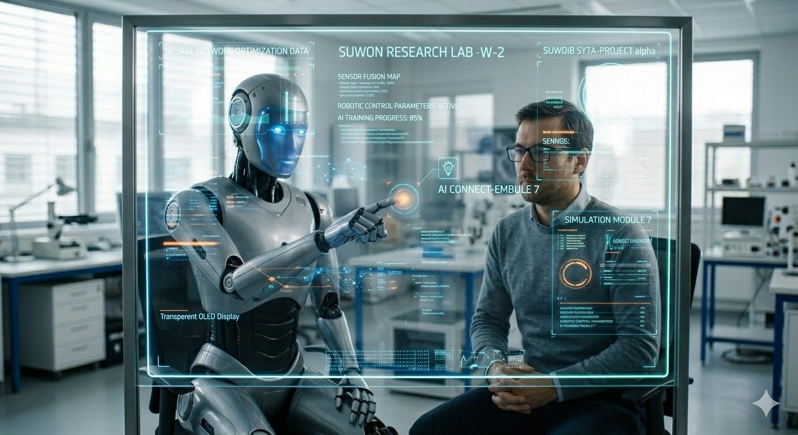
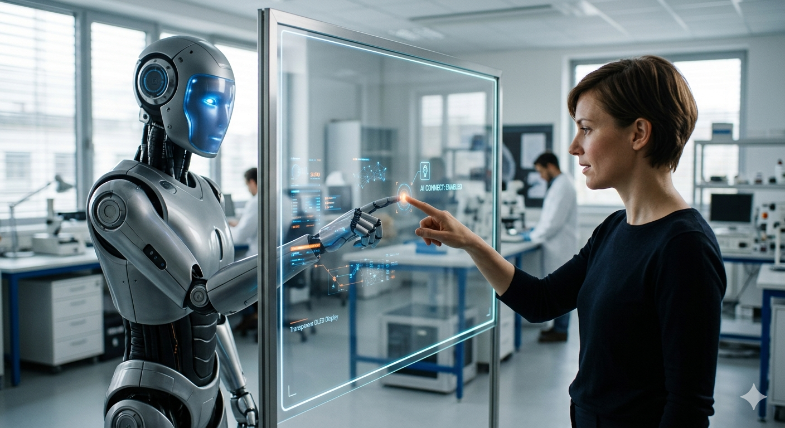
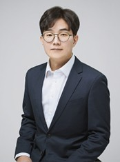

인공지능과 디스플레이가 만나는 조만간의 일상은, 기술이 더 눈에 띄게, 더 복잡하게 나타나는 것이 아니라, 오히려 "보이지 않게 잘 작동하는 것"으로 수렴된다. 집 안의 벽면 디스플레이, 차량의 대시보드, 회사의 모니터, 공공장소의 안내판에 내장된 AI는 사람의 상태와 상황을 먼저 읽고, 그에 맞게 정보를 재구성해 화면에 띄워 준다. 버튼은 사라지고, 메뉴는 줄어들고, 대신 디스플레이는 사용자의 상황과 상태를 먼저 이해한 뒤, 필요한 정보와 행동을 미리 준비해 두는 플랫폼이 된다.
이때 AI는 디스플레이를 단순히 '빛과 정보'의 도구가 아니라, 사람과 기계, 사람과 사람, 그리고 개인과 사회 전체를 연결하는 '감각적 인터페이스'로 진화시킨다. 아침에는 건강과 스케줄을 종합해 조용히 조언을 보내고, 출근길에는 교통과 안전을 실시간으로 시각화해 안내하며, 사무실에서는 업무와 집중을 조율해 주고, 집으로 돌아오면 감정과 여가를 함께 다독여 준다.
조만간 닥칠 이 미래의 일상에서, 우리는 디스플레이와 AI가 서로를 보완하며, 우리의 감정, 건강, 시간, 관계를 더 섬세하게 다루는 도구로 살아가게 될 것이다.
첨단디스플레이공학과 계간지의 창간을 매우 뜻깊게 생각하며, 이를 위해 힘써주신 모든 구성원 여러분께 깊이 감사드립니다.
우리 첨단디스플레이공학과는 2024년 9월, 국내 최초의 정부지원 디스플레이 특성화 대학원으로 출범하여, 빠르게 변화하는 디스플레이 산업 환경 속에서 미래 기술을 선도할 핵심 인재를 양성하기 위한 체계적인 교육 및 연구 기반을 구축해 왔습니다. 디스플레이 산업은 단순한 시각 정보 전달을 넘어, 인간과 디지털 세계를 연결하는 핵심 인터페이스로 진화하고 있으며, 소재, 소자, 공정, 시스템, 그리고 인공지능까지 아우르는 융합적 접근이 필수적인 분야가 되었습니다.
우리 학과는 OLED, micro-display, QDLED, 투명 디스플레이와 같은 차세대 디스플레이 기술뿐 아니라, AI for display, XR optics, flexible & stretchable electronics, oxide/LTPS TFT, DDI 및 영상처리 등 폭넓은 연구 분야를 포괄하는 교육과정을 운영하고 있습니다.
특히, 삼성디스플레이와 LG디스플레이를 비롯한 60여 개 참여기업과의 긴밀한 산학협력 체계는 우리 학과의 가장 큰 강점 중 하나입니다.
여러분의 지속적인 관심과 성원을 부탁드립니다. 감사합니다.

첨단디스플레이공학과 계간지의 창간을 진심으로 축하드립니다.
정보통신대학은 빠르게 변화하는 기술 환경 속에서 미래 산업을 선도할 융합형 인재를 양성하는 것을 핵심 목표로 삼고 있으며, 이러한 관점에서 첨단디스플레이공학과의 출범과 성장은 매우 중요한 의미를 지니고 있습니다. 디스플레이 기술은 반도체, 인공지능, 통신, 콘텐츠 산업과 긴밀하게 연결된 핵심 기반 기술로서, 차세대 산업 경쟁력을 결정짓는 중요한 축을 형성하고 있습니다.
첨단디스플레이공학과는 이러한 산업적·기술적 흐름에 선제적으로 대응하여, 정부 지원을 기반으로 한 체계적인 교육 프로그램과 산학협력 중심의 연구 환경을 구축하고 있습니다. 특히, 다수의 기업과 협력하여 실질적인 연구와 교육을 동시에 수행하는 모델은 정보통신대학이 지향하는 실용적이고 혁신적인 공학교육의 모범 사례라 할 수 있습니다.
또한, 디스플레이 분야는 최근 XR, 메타버스, 인공지능 기반 인터페이스 기술과 결합되면서 새로운 성장 국면에 진입하고 있습니다. 정보통신대학은 앞으로도 첨단디스플레이공학과가 글로벌 수준의 교육 및 연구 거점으로 성장할 수 있도록 적극적으로 지원할 것입니다.
다시 한번 계간지 창간을 진심으로 축하드립니다. 감사합니다.
인공지능과 디스플레이가 만나는 조만간의 일상은, 기술이 더 눈에 띄게, 더 복잡하게 나타나는 것이 아니라, 오히려 "보이지 않게 잘 작동하는 것"으로 수렴된다. 집 안의 벽면 디스플레이, 차량의 대시보드, 회사의 모니터, 공공장소의 안내판에 내장된 AI는 사람의 상태와 상황을 먼저 읽고, 그에 맞게 정보를 재구성해 화면에 띄워 준다. 버튼은 사라지고, 메뉴는 줄어들고, 대신 디스플레이는 사용자의 상황과 상태를 먼저 이해한 뒤, 필요한 정보와 행동을 미리 준비해 두는 플랫폼이 된다.
이때 AI는 디스플레이를 단순히 '빛과 정보'의 도구가 아니라, 사람과 기계, 사람과 사람, 그리고 개인과 사회 전체를 연결하는 '감각적 인터페이스'로 진화시킨다. 아침에는 건강과 스케줄을 종합해 조용히 조언을 보내고, 출근길에는 교통과 안전을 실시간으로 시각화해 안내하며, 집으로 돌아오면 감정과 여가를 함께 다독여 준다.
조만간 닥칠 이 미래의 일상에서, 우리는 디스플레이와 AI가 서로를 보완하며, 우리의 감정, 건강, 시간, 관계를 더 섬세하게 다루는 도구로 살아가게 될 것이다.
첨단디스플레이공학과 계간지의 창간을 매우 뜻깊게 생각하며, 이를 위해 힘써주신 모든 구성원 여러분께 깊이 감사드립니다.
우리 첨단디스플레이공학과는 2024년 9월, 국내 최초의 정부지원 디스플레이 특성화 대학원으로 출범하여, 빠르게 변화하는 디스플레이 산업 환경 속에서 미래 기술을 선도할 핵심 인재를 양성하기 위한 체계적인 교육 및 연구 기반을 구축해 왔습니다. 디스플레이 산업은 단순한 시각 정보 전달을 넘어, 인간과 디지털 세계를 연결하는 핵심 인터페이스로 진화하고 있으며, 소재, 소자, 공정, 시스템, 그리고 인공지능까지 아우르는 융합적 접근이 필수적인 분야가 되었습니다.
우리 학과는 OLED, micro-display, QDLED, 투명 디스플레이와 같은 차세대 디스플레이 기술뿐 아니라, AI for display, XR optics, flexible & stretchable electronics, oxide/LTPS TFT, DDI 및 영상처리 등 폭넓은 연구 분야를 포괄하는 교육과정을 운영하고 있습니다.
특히, 삼성디스플레이와 LG디스플레이를 비롯한 60여 개 참여기업과의 긴밀한 산학협력 체계는 우리 학과의 가장 큰 강점 중 하나입니다.
여러분의 지속적인 관심과 성원을 부탁드립니다. 감사합니다.
첨단디스플레이공학과 계간지의 창간을 진심으로 축하드립니다.
정보통신대학은 빠르게 변화하는 기술 환경 속에서 미래 산업을 선도할 융합형 인재를 양성하는 것을 핵심 목표로 삼고 있으며, 이러한 관점에서 첨단디스플레이공학과의 출범과 성장은 매우 중요한 의미를 지니고 있습니다. 디스플레이 기술은 반도체, 인공지능, 통신, 콘텐츠 산업과 긴밀하게 연결된 핵심 기반 기술로서, 차세대 산업 경쟁력을 결정짓는 중요한 축을 형성하고 있습니다.
첨단디스플레이공학과는 이러한 산업적·기술적 흐름에 선제적으로 대응하여, 정부 지원을 기반으로 한 체계적인 교육 프로그램과 산학협력 중심의 연구 환경을 구축하고 있습니다. 다수의 기업과 협력하여 실질적인 연구와 교육을 동시에 수행하는 모델은 정보통신대학이 지향하는 실용적이고 혁신적인 공학교육의 모범 사례라 할 수 있습니다.
또한, 디스플레이 분야는 최근 XR, 메타버스, 인공지능 기반 인터페이스 기술과 결합되면서 새로운 성장 국면에 진입하고 있습니다. 정보통신대학은 앞으로도 첨단디스플레이공학과가 글로벌 수준의 교육 및 연구 거점으로 성장할 수 있도록 적극적으로 지원할 것입니다.
다시 한번 계간지 창간을 진심으로 축하드립니다. 감사합니다.